Operating Documentation
Direction 5133330-3, Rev# 14
Signa EXCITE HD 3.0T Service Methods
Module Version 1.0, Version Date 5/3/07
Operating Documentation |
The MXA is a class 1 device. The MXA system is a multi-channel, constant current driver intended to provide a stable, low noise current drive for room-temperature bore (resistive) shim coils used in MRI applications. The system is AC powered and is self-contained. It is made up of the following sections:
Regulated AC powered DC power supplies with integrated forced air cooling
RS-232-to-parallel intelligent controller
Optically isolated digital-to-analog converters (16 bit)
High-bandwidth transconductance amplifiers
Current monitoring circuitry with selection switch
Safety circuitry with status indicator
The MXA system is a digitally controlled, multi-channel, wide-bandwidth current source for use with MRI shim systems. It is contained in an industry standard 3U x 19” subrack and is comprised of several sections:
POWER SUPPLY UNIT including power entry, toroidal transformers, linear power supplies, cooling system and thermal protection sensors.
CONTROL COMPUTER is an industrial-grade PC clone based on a P-104 bus and equipped with a RAM disk, serial communication ports (control and diagnostic), and an OPTO-22 standard digital I/O capable of bi-directional operation.
OPTO-ISOLATION CARD controlled by the DIGITAL I/O bus and used for galvanic isolation of the digital-to-analog conversion and analog circuitry of the system.
DIGITAL BACKPLANE is a proprietary backplane used to distribute the multiplexed digital signals to the INTERLOCK and MXV-4 (DAC) cards.
INTERLOCK CARD controls the analog switches enabling the input to the power amplifiers.
CARDS contain four (4) 16 bit analog-to-digital converters each, precision analog references and control logic capable of digital value read-back. The readback is provided for digital path test only.
CARDS containing two (2) current amplifiers each, analog interlock switches, current shunts and analog current test outputs.
OUTPUT TEST SELECTOR SWITCH connected to the individual current shunts on each of the current sources and presenting an analog voltage proportional to the output current (100 mV/amp).
CURRENT OUTPUT delivering ± 4 amperes of current isolated from the chassis ground and galvanically isolated from the control system computer and other electrical circuitry.
The intelligent controller (PC P-104 bus system) running MX-SERVER software interprets high-level RS-232 commands and provides control signals to the 24-bit parallel bi-directional interface. The interface controls a proprietary 24-bit parallel bus via a parallel opto-isolation card. The bus distributes the CONTROL, ADDRESS, and DATA words to the INTERLOCK control card and MXV cards containing precision digital-to-analog converters, references and buffers (four per card). Analog voltage levels generated by the DAC’s are wired into the inputs of the CDI-2 cards containing two transconductance current amplifiers each. The interlock signal is bused into the control inputs of each CDI-2 cards. This is used to control a C-MOS switch enabling the analog inputs of each channel. The interlock is “AND”-ed with the power supply over-temperature sensor circuitry.
Under normal conditions the MXA system computer boots the MX-SERVER software and initializes all DAC’s to zero, enables the interlock, and loads the FILE1.DAC containing the default output levels for all channels. At that point the system is ready to accept RS-232 commands from the host. The RS-232 commands available include interlock control, DAC output level set, DAC level get, and a variety of other system commands. The system contains a total power dissipation calculation capability, file download capability, and provides error messages. Detailed operation of the RS-232 interface is described in a separate manual.
The MXA system is a stand-alone, self-contained unit relying on the external AC power and serial communication from the host computer system by means of an RS-232 link. A computer diagnostic port is also provided.
The operation of the system is divided into two distinct modes:
START-UP - upon powering the system the internal computer automatically loads the BIOS and the OPERATING SYSTEM (DR DOS) followed by loading the MXSERVER and all system operating files. At the completion of this process the DAC’s are loaded with mid-range values (analog “0” output) and the INTERLOCK is enabled. The final stage of system preparation involves loading the DAC’s with values stored in FILE1.DAC stored in the RAM DISK. At this point the system is capable of accepting the RS-232 commands including loading the individual shim gradient values.
ROUTINE OPERATION - normal mode of operation involves the ability to control all channels by RS-232 control commands, readback of programmed values and storage of user-modified files on the system RAM DISK. The detailed control procedures are described in other sections of this manual.
RS-232 input is converted by the system computer into digital data presented at the DIGITAL I/O, processed through the OPTO-ISOLATION card, and loaded into the appropriate DAC. The analog output of the DAC is applied to the corresponding POWER AMPLIFIER for conversion from a ± 5 volt analog to ± 4 amperes POWER OUTPUT.
The high-bandwidth amplifier of the current source uses a resistive feedback system based on a 4-terminal precision shunt of 0.1 ohm. The voltage developed at the shunt is also available at the test terminals of the system for testing applications.
| ||||
| DUE TO THE FACT THAT THE FEEDBACK SYSTEM USES THE RETURN PATH OF THE CURRENT TO GENERATE THE REQUIRED CONTROL VOLTAGE, IT IS CRITICAL THAT THE PATH TO THE LOAD BE FREE OF PARASITIC CURRENT FLOW. DISTORTION OF THE CURRENT FLOW IN THE LOAD CIRCUIT WILL ADVERSELY AFFECT THE PERFORMANCE OF THE UNIT AND MAY LEAD TO THE POWER AMPLIFIER FAILURE. THE LOAD WIRING MUST NOT HAVE ANY DC CONNECTIONS TO GROUND OR OTHER CIRCUITS. | ||||
The primary characteristic of the MXA limiting the static operation is the precision and stability of the output. The design and parts selection for both the digital-to-analog conversion and the analog feedback circuitry present very high performance capabilities. The limitations are:
Resolution: 16 bits (± 15 bit full scale)
Monotonicity: 13 bits
DC Offset trim: ± 1% full scale (internal)
Zero Drift: not more than 30 ppm per day
Gain: ± 1%
Gain drift: ± 50 ppm per 24 hours
Noise: < 50 ppm for 10Hz to 50 KHz; 15 ppm p-p 0.1 HZ to 10 Hz
Shunt precision: - 1%
Shunt TCR (temperature coefficient of resistivity): - 10 ppm/deg.C
Shunt Power Dissipation: - 3.4 deg C/W
The calibration curves are provided in both absolute and differential linearity plots.
The CONTROL BANDWIDTH of the individual channel is limited by the following factors:
Speed of the digital input - limited by the BAUD RATE of the RS-232 and the computer speed. In most cases the BAUD RATE (normally 19200) is an overwhelming limitation.
Speed of the digital-to-analog conversion - the conversion rate of the DAC’s used in the system is 2 microseconds
Gain of the amplifier - the closed loop gain of the system power amplifier measured into resistive load (test conditions) is in excess of 50 kHz. In most cases, the response is limited by the power supply voltage.
Impedance of the load - see above - limitation only by the power supply rail voltage.
Power supply voltage - the maximum voltage swing of the power amplifier is ± 24 volts.
The RESPONSE BANDWIDTH of the individual channel (injection of the signal through the load) is limited by the:
Power supply voltage - the maximum voltage swing of the power amplifier is ± 24 volts.
Power supply voltage - the maximum voltage swing of the power amplifier is ± 24 volts.
Gain of the amplifier.
AC INPUT - The power supply section is protected by standard filters and fusing.
TRANSFORMERS - Toroidal transformers are used throughout the analog and power sections of the unit. Both transformers are electrostatically isolated and magnetically shielded in order to minimize internal interference and magnetic pick-up in the analog electronics.
LINEAR REGULATORS - Pass-bank type linear regulators of all voltages is used. Overvoltage protection is applied to the analog power (±12V). All regulators are overcurrent protected.
THERMAL PROTECTION - Two cooling fans are used in the power supply section (air-flow generated in this section is also used in the power amplifier section). Overtemperature sensors are applied to the rail power supplies and are wired to the INTERLOCK circuitry. In the event of overtemperature due to excessive power demand, the INTERLOCK cuts the power amplifier demand.
SHORT-CIRCUIT - thermal shut-down internal to the amplifier
OVER-CURRENT - output shunt feedback is provided
OVERVOLTAGE - fast diodes to supply rails are provided
The following potentiometer control is provided:
Offset: Provides for DC offset nulling
Power Supply: Fine adjustment of DC power voltage levels and over-current protection trigger (internal)
Following internal trim adjustments are incorporated:
+26 V; ±3.5V Rail power supply voltage trim
-26 V; ±3.5V Rail power supply voltage trim
+26 V @12A Power supply over-current set
-26 V @12A Power supply over-current set
| NOTE: | All controls are factory set and should require no field adjustment. |
| ||||
| PROCEDURES ARE AVAILABLE TO PERMIT READJUSTMENT WITH PROPER EQUIPMENT AND TEST FIXTURING. | ||||
An optional differential analog input can be provided (factory installed option).
Differential analog voltage ± 5 V.
MXA digital interface is supplied through the DAC module parallel opto-isolation card.
A 50-pin header (3M type 3433-5302 or equivalent) is used for data input.
All signals are TTL (true negative logic).
Single ended inputs are required.
Each signal has an associated active pin and a paired ground.
Transmission through a twisted pair ribbon cable is not required but recommended.
Data interface is provided by optically isolated lines.
All data transfers are parallel 24-bit words (8 DATA, 8 ADDRES, 8 CONTROL).
The shim supply meets the following performance characteristics:
Current Output
The shim supply is compatible with the resistive shim drums designed for the 3T80 and 3T94 MR scanners. The freestanding resistance and inductance for the shim drums are stated in Tables 4A and 4B.
Range: ± 4 amp full scale
Voltage: ±24 volts maximum
Total output is 12 amps cumulative and will not exceed ± 12 amp
Full Power Bandwidth: DC to 50 kHz
Loop gain: > 60 dB
The shim supply is rated for continuous duty cycle
| Coil | Label | Resistance | Inductance |
|---|---|---|---|
| Units = Ohms | Units = mH | ||
| Z2 | 5.1 | ||
| Z3 | 6 | ||
| ZX | 4.94 | ||
| ZY | 4.92 | ||
| C2 | 6.66 | ||
| S2 | 6.76 |
Resolution: 16 bits (± 15 bit full scale)
Monotonicity: 13 bits
DC Offset trim: ± 1% full scale (internal)
Zero Drift: not more than 30 ppm per day
Gain: ± 1%
Gain drift: ± 50 ppm per 24 hours
Noise: < 50 ppm for 10Hz to 50 KHz; 15 ppm p-p 0.1 HZ to 10 Hz
Load resistance: 2.5 to 6 ohm (including cable)
Load inductance: 0 to 20 mH (including cable)
Load capacitance: 0 to 100 nF (load to load capacitance and detailed distribution is critical - consult factory)
Rise time (10-90%): 100 µS (small signal)
Rise time (10-90%): 1000 µS (full scale)
Settling Time: ± 15 ppm of full scale within 2000 µSec
| Coil | Inter Capacitance Units = nF |
|---|---|
| ZY to ZX | 48 |
| ZY to X2-Y2 | 22.5 |
| ZY to XY | 25.5 |
| ZY to Z2 | 15 |
| ZX to X2-Y2 | 26.5 |
| ZX to XY | 30 |
| ZX to Z2 | 14.7 |
| X2-Y2 to XY | 64 |
| X2-Y2 to Z2 | 14.3 |
| XY to Z2 | 15.4 |
AMP CONNECTOR 206306-1, 37 POSITION WITH NUMBER 23 SHELL
Table 1: Output Connector Pinouts
| Coil | Output | Return |
|---|---|---|
| Z2 | 5 | 6 |
| Z3 | 7 | 8 |
| ZX | 17 | 18 |
| ZY | 19 | 20 |
| X2-Y2 | 25 | 26 |
| XY | 27 | 28 |
| GROUND | 37 |
J-4 Connector D-Sub 25 F
| Coil | Label | Output | Out | Return |
|---|---|---|---|---|
| V | J-4 PIN | J-4 PIN | ||
| Z2 | Z2 | 5 | 1 | 14 |
| Z3 | Z3 | 5 | 2 | 15 |
| ZX | ZX | 5 | 3 | 16 |
| ZY | ZY | 5 | 4 | 17 |
| X2-Y2 | C2 | 5 | 5 | 18 |
| XY | S2 | 5 | 6 | 19 |
| AUX 1 | 5 | 7 | 20 | |
| AUX 2 | 5 | 8 | 21 | |
| SHIELD | 25 |
The following LED indicators are provided:
"DC Power" indicates DC power ON for +5V computer, +5 V, +12 V, -12 V, +26 V, -26 V
"Interlock" indicates system ready
“Overheat" fault indicates an over-temperature at power supply heatsinks.
A floating output wired to a double stack rotary switch selecting channels to a double banana plug connector is provided for monitoring the level at the current feedback resistive shunt.
The front panel mounted isolated banana connector provides a current monitor signal. This signal is ± 400 mV full scale and provides a direct, high quality, low noise test signal. A floating oscilloscope or digital voltmeter should be used to test pulsed or DC performance of the system. System noise and zero offset specifications can also be tested using this output.
For fine measurements the use of differential input floating oscilloscope or meter will be required.
A current voltage display is located on the front panel. Voltage displayed will be a minimum 26 VDC with a nominal voltage of 28.5 V
The MXA is furnished with an intelligent RS-232 controller.
The pin-out of the serial control cable required is:
| MXA Signal | D-Sub 9 | Cable | D-Sub 9 | D-Sub 25 | Host System Signal |
|---|---|---|---|---|---|
| Female | Female | Male | |||
| RX | 2 | < > | 3 | 2 | TX |
| TX | 3 | < > | 2 | 3 | RX |
| GND | 5 | < > | 5 | 7 | GND |
| DTR | 4 | < > | 1 | 8 | DCD |
| DTR | 4 | < > | 6 | 6 | DSR |
| DCD | 1 | < > | 4 | 20 | DTR |
| DSR | 6 | < > | 4 | 20 | DTR |
| RTS | 7 | < > | 8 | 5 | CTS |
| CTS | 8 | < > | 7 | 4 | RTS |
| 9 | open | 22 | RI |
An RS232 Communication Port is used to control the shim supply and is configured as Data Terminal Equipment with the following parameters:
Baud Rate 19200
Data Bits - Eight
Stop Bits - One
Start Bits - One
Parity - None
Control flow - None
An RS232 Communication Port is used to control the shim supply and is configured as Data Terminal Equipment with the following parameters:
Baud Rate 19200
Data Bits - Eight
Stop Bits - One
Start Bits - One
Parity - None
Control flow - None
Summary of Commands with Descriptions
| Command | Function | Changes |
|---|---|---|
| SC, GC | Set Coarse, Get Coarse Gradient | Parameters are real values. Fractional part will roll over into fine gradient, if supported. |
| SF, GF | Set Fine, Get Fine | N/A |
| SA, GA | Set DAC, Get DAC | New command allows setting of an individual DAC, for testing shim system. |
| LG, GG | Load Gradient, Get Gradient | This command is obsolete, since SC admits fractional values, but is still supported. |
| PC, PF, PG | Prepare Coarse, Prepare Fine, Prepare Gradient | These new commands allow gradients to be pre-loaded without actually setting the DACs. Use of a UO command (or completion of a commit interval) then sets the DACs. |
| UO | Update DAC Outputs | New command commits prepared gradients. |
| CP | Calculate Power | New command calculates dissipated power in shim coil assembly using current settings and coil resistances. |
| SP, GP | Set Interlock, Get Interlock | N/A |
| SH, GH | Set Homospoil, Get Homospoil | N/A |
| SZ, GZ | Set Z0 control, Get Z0 control | N/A |
| SS, GS | Set Z0 Strength, Get Z0 Strength | New command sets or gets Z0 strength in 1H Hz per Coarse DAC Count for use with forced drift control. |
| SD, GD | Set Drift Value, Get Drift Value | This command takes a floating point parameter, which is the drift value in 1H Hz per hour. As with SC, any fractional part will propagate into the fine Z0 value. |
| DC, DS, DT | Set Drift Control, Get Drift Control, Get Remaining Drift Time | Drift control get only be enabled or disabled; there is no longer a separate coarse and fine drift control. |
| FS, FR, FO | Save File (.DAC), Read File (.DAC), Read File (.DAC) One | N/A |
| FT | Read Test File | New command loads DAC values from test file (SAV) for system testing. |
| UD | Update Disk | New command reads system files from floppy disk onto solid - state (flash) disk and updates the configuration file on the solid-state (flash) disk. |
| SI, GI | Set DAC Commit Interval, Get DAC Commit Interval | New command sets or gets commit interval in milliseconds. |
| GV | Get Version | New command returns software version, .HIM filename, and operational system path. |
| SK | Start Kermit | New command spawns MSKERMIT in server mode on the shim computer. |
| QR | Quit Remote Interface | New command ends program execution. |
Error messages are returned through the command port (COM1) to the host computer. A variety of diagnostic messages, the level of whose detail is governed by the -m switch on MXSERVER, are returned through the console port (COM2).
To aid in decoding error conditions, the error codes have been grouped as follows:
| Error Code | Description |
|---|---|
| 200-299 protocol/command errors | |
| 201 | Communication Error |
| 202 | Unknown Command |
| 203 | Incorrect Number of Parameters |
| 204 | Illegal Parameter |
| 205 | Operation Failed |
| 300-399 Operation Errors | |
| 301 | Unknown Gradient |
| 302 | Parameter Out of Range |
| 303 | Drift Value Not Set |
| 304 | Gradient Not Supported |
| 305 | DAC Value Out of Range |
| 306 | Power Limit Exceeded |
| 307 | Interlock Failed |
| 308 | Power Limit Exceeded During Drift |
| 310 | Gradient Set File Not Found |
| 311 | Test File Not Found, Cannot Update Same Drive |
| 400-499 System Errors | |
| 400 | Undefined Error |
| 401 | Error Getting Free Disk Space |
| 402 | Not Enough Disk Space |
| 403 | Kermit Error |
The MXA system is fully enclosed in metal covers on all surfaces. Except for approved, grounded AC line connector, no hazardous potentials exist at any interface connector subsequent to any probable internal component failure. With covers removed, no hazardous voltages or surface temperatures are accessible to finger contact in normal operation.
Fans are equipped with outside finger guards.
Suitable warning labels are provided to ensure proper replacement fuse selection.
Good operating practice with any piece of electronic equipment requires that suitable, safe power wiring be provided for it, that grounding requirements be followed, and that any required servicing be done by those properly trained to deal with the equipment in question. This manual assumes that installation of, and any intervention into the MXA system is completed only by those suitably aware of, and adept in, these practices, and that these practices are observed.
| ||||
| VOLTAGES UP TO ~120 VOLTS AC AND UP TO ± 28 VOLTS DC EXIST INSIDE THE POWER SUPPLY MODULE. | ||||
| ||||
| VOLTAGES UP TO ± 24 VOLTS DC EXIST ON EXTERNAL OUTPUT TERMINALS. | ||||
| NOTE: | All controls are factory set and should require no field adjustment. |
| ||||
| PROCEDURES ARE AVAILABLE TO PERMIT READJUSTMENT WITH PROPER EQUIPMENT AND TEST FIXTURING. | ||||
The MXA system is capable of stable operation at very high dynamic ranges of currents. It will be understood that operation of the MXA system in conjunction with other electronics, in particular an MRI or NMR spectrometer, will require suitable inter-system grounding that may be peculiar to the particular systems involved. In the case of any question, assistance of engineers from Resonance Research and from the supplier of the other electronics systems involved should be sought to guide any such interconnection wiring.
| ||||
| THE PROPER PERFORMANCE OF THE SYSTEM REQUIRES THAT ALL OUTPUT WIRING BE GALVANICALLY ISOLATED (ELECTRICALLY FLOATING) FROM ALL SYSTEM POWER GROUND AND CHASSIS CONNECTIONS. | ||||
| NOTE: | The internal control computer is fully opto-isolated from the power sub-system and requires no additional isolation. The serial port connection (RS-232 null modem) requires standard cabling techniques only. |
Repair and internal adjustment of the MXA system electronics is represented here to require significant knowledge of the subsystems involved and should be attempted in the field only with the knowledge, approval, and support of Resonance Research, Inc.
| ||||
| SYSTEM POWER TESTS MUST BE CONDUCTED USING INDUCTIVE LOADS ONLY. USE OF THE PURELY RESISTIVE LOADS MAY LEAD TO AMPLIFIER OSCILLATION AND POTENTIAL DAMAGE. USE OF IMPROPER TEST CONDITIONS WILL VOID THE SYSTEM WARRANTY. | ||||
Current sources and their power supplies are protected against:
Short Circuit
Thermal Runaway
Over-Voltage
Electrical limitations of the current source include:
Minimum load resistance (output overload)
Maximum load resistance (compliance voltage of the source)
Minimum load inductance (stability)
Maximum load inductance (bandwidth)
Total power dissipation (power supply current limits)
Frequency response (loop gain)
| ||||
| THE TOTAL CUMULATIVE OUTPUT CURRENT FOR THE SYSTEM MAY NOT EXCEED + 12 A AND -12 A DC. | ||||
| NOTE: | Excessive current demand will lead to the power supply section shut down. Such shut down may result in oscillation of the power source due to overcurrent recovery cycle. This is not likely to cause damage to the output amplifiers, however will adversely affect the performance of the shim system. |
| Symptom | Cause | Remedy | |
|---|---|---|---|
| No response from RS-232 controller | computer lock-up | reboot (power cycle) | |
| computer power supply fault | check fuses | ||
| Interlock fault | check analog PS fuses | ||
| replace board | |||
| No current output | power supply fault | check fuses | |
| amplifier fault | replace | ||
| power supply overheating | interlock fault - reinitialize | ||
| system, lower current demand | |||
| Power amplifier oscillation | load inductance insufficient for | check load connections, contact | |
| stable operation | RRI for adjustment | ||
| load resistance too low | short circuit of output | ||
| load resistance too high | lower current demand | ||
| excessive cumulative current demand | lower current demand on some channels | ||
| Ringing after gradient pulse | excessive coupling between gradients and shims | check wiring of gradient coils and shim coils | |
| insufficient voltage headroom | lower current demand | ||
| Output below rated value | load resistance too high | check maximum voltage level | |
| power supply at current limit | excessive current demand | ||
| transformer core saturated | remove unit from magnet fringe field | ||
| System shut-down | excessive power demand | lower demand | |
| interlock fault | power supply overheating | ||
| programming error | reboot system | ||
| System fails to boot | interlock fault | test interconnection to opto-card | |
| excessive values in file1.dac | reprogram file1.dac |
Illustration 1: System Block Diagram
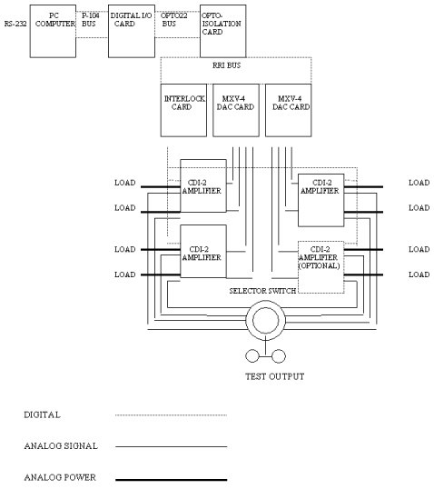
Illustration 2: Power Amplifier Block Diagram
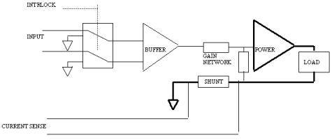
Illustration 3: DAC Block Diagram (one DAC shown)
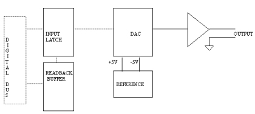
Power to power supply must be configured in all cases to 120 VAC ± 10%, single phase.
Frequency: 50 or 60 Hz
Power rating: not less than 1000 VA
A rating plate on the resistive shim power supply indicates all UL and/or other safety certifications.
AC input with Line Filter will be Schurter or equivalent.
AC Input is protected by dual 10 A SLO-BLOW type T 3AG 5 X 20 mm fuses.
Main Power Switch shall be a dual pole single throw (DPST), rated at 10 A
Fusing is provided on rear panel with individual fuse holders for all power supplies; fuse requirements are as follows:
All fuses are SLO-BLOW type (such as Littlefuse 239,219,229, and 218 or equivalent).
| Fuse | Description |
|---|---|
| F1 | T10 AL250V |
| F2 | T10 AL250V |
| F3 | T2.0 AL250V |
| F4 | T6.25 AL250V |
Idle power is approximately 150 VA.
Peak power is approximately 1000 VA.
Power Factor is not specified.
Power Switch - A rear panel AC line switch has "On" and "Off" symbols.
DC Status Indicators - LED’s mounted on the front panel indicate status of six voltages generated by the DC power supplies: +5 V computer, +5 V, +12 V, -12 V, +26 V, -26 V , in addition to interlock and overheat fault.
Output Meter - An output meter is mounted on the front panel.
| ||||
| WARNING: THE UNIT MUST NOT BE EXPOSED TO HIGH MAGNETIC FIELD DURING SHIPPING, STORAGE, INSTALLATION OR | ||||
The MXA-6-OR is shipped in a crate with a removable lid. Total weight of the system with the packaging is approximately 90 lbs.
| NOTE: | Due to the system weight, it is recommended that two people perform the unpacking. |
The lid is removed by removing the eight screws. Use of a power screwdriver is recommended. The crate contains, in addition to the system:
Power cord, output cables (2), output cable (6'), data cable, data cable, and diagnostic cable
RF output filter
Angle supports (4), access panel, 3U blank panel (not used for Twin)
Hardware kit
Manual
Final test results.
The MXA is a non-patient contact device and does not require sterilization or disinfecting procedures. During routine maintenance of the electronic cabinet the MXA can be wiped with a dry cleaning cloth. During installation and routine maintenance of related patient contact equipment, wipe cable connected to magnet with a 70% solution of isopropyl alcohol.
The following are the instructions for the installation of a MXA 6GE-V2 shim power supply into the supports.
| NOTE: | Installation of the Resistive Shim Power Supply requires two people OR the Universal Hoist Kit (P/N 46-317266G3). |
| NOTE: | The rails are installed in the TAC Cabinet. Connect the hoist to the TAC using the replacement procedure. |
Using the screws included with the anti-tip legs, secure the aluminum anti-tip legs to the threaded holes on each side of the base of the TAC Cabinet. See Illustration 4.
Remove the front cover and the top bracket from the TAC cabinet.
Open the rear TAC cabinet door.
Remove the four (4) screws that attach the fan module to the TAC cabinet. Set the fan module in the cabinet.
Locate and open the Universal Lift Hoist Kit.
| NOTE: | The Universal Lift Hoist is assembled from parts stored in the Universal Lift Hoist Kit. |
Locate the three (3) large Steel Rail sections and place them on a flat surface for assembly. See Illustration 5.
Arrange the rail sections in the proper order (rear, center, then front) and fasten them together with 4.75” X 1/2” caps crews and hex nuts.
Use the crescent wrenches to tighten the cap screws.
Assemble and fasten the elevating brackets to the rail assembly. See Illustration 6.
Center the Steel Rail and elevating bracket assembly at the top of TAC Cabinet, so the hoist assembly will face the front of the cabinet. See Illustration 7.
Tighten the bolts on the Steel Rail to secure it to the top of the cabinet.
| NOTE: | Verify that all hardware is securely fastened; all bolts and nuts must be tight prior to attaching the hoist assembly to the lift kit. |
Locate the Hoist Assembly in the Lift Kit. See Illustration 8.
Insert the Hoist Assembly into the open end of the front rail. Insert a locking pin into the holes near the front edge of the front rail. This locking pin prevents the Hoist Assembly from sliding out of the rails. See Illustration 9.
Attach the hoist side brackets to the resistive shim supply. See Illustration Illustration 10.
Attach the hoist bar to the side brackets.
Hoist the resistive shim supply up and slide it part way into the TAC Cabinet. See Illustration 11.
Remove the hoist bracket and side brackets from the resistive shim supply.
Slide the resistive shim supply all the way into the cabinet.
Install the four (4) bolts that attach the resistive shim supply to the TAC Cabinet.
Remove the hoist assembly from front rail.
Loosen the bolts that secure the Steel Rail to the top of the cabinet.
Remove the Steel Rail from the cabinet.
Replace the top bracket and front cover for the TAC Cabinet.
Replace the fan module and secure with four (4) screws.
Remove the anti-tip legs.
Remove the lock out and tag out for the TAC Cabinet.
Un-assemble and return the Universal Lift Hoist Kit components to the case.
Illustration 4: Installing Anti-Tip Legs On Sides of Cabinet
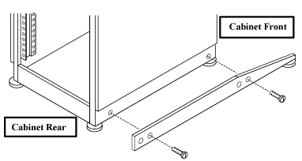
Illustration 5: Steel Rail Sections, Hex Bolts, And Hex Nuts
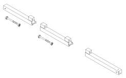
Illustration 6: Hoist Top Rail Parts With Elevating Brackets
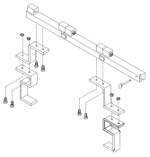
Illustration 7: Hoist Installed On TAC Cabinet
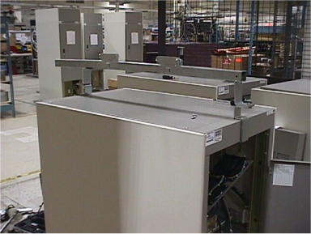
Illustration 8: Hoist Assembly
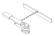
Illustration 9: Placement of Hoist Assembly Into Front End of Steel Rail Assembly
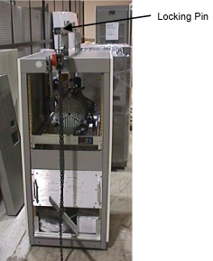
Illustration 10: Hoist Side Brackets
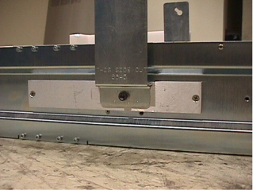
Illustration 11: Supply Installation
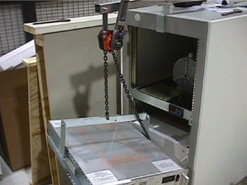
| ||||
| Handle fiber optic cables carefully. Do not bend fiber optic cables to radius smaller than two inches (50 mm). Avoid scratching connector ends. Keep connectors protected until ready to connect. | ||||
| NOTE: | Remove all Orange labeling on cabling as this is for the 3T version of the shim supply. |
Mount short SHIM PS data cable (P/N 2257702-09) to the inner side of the J27 IF interface panel, using the provided feed through connectors. Connect the other side of the cable to COM 1 output of the SHIM PS.
Mount the short SHIM PS output cable (P/N 2257702-10) to the inner side of the J22 IF panel. Secure the connector by installing four (4) screws and nuts. See Illustration 12.
Connect the other side of the SHIM current output to J3 of the SHIM PS.
Mount the shim filter to the pen panel. Connector P1 is orientated on the equipment room side of the pen panel.
Connect run G11 between J22 on the TAC Cabinet and P1 on the shim filter.
Connect run G12 to J1 on the magnet room side of the pen panel to the short jumper cable.
Connect the short jumper cable to the shim coil cable located at the rear pedestal.
Connect run 1004 to J27 on the TAC Cabinet to Port 2 of the SCSI serial expansion on OW1 A16.
Illustration 12: SHIM PS Output Cable Mount
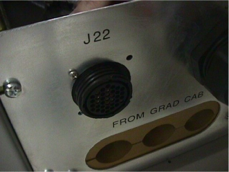
Internal cooling fans with front panel intake and rear panel exhaust are provided.
DC power supply over-temperature sensing and shutdown are provided.
The MXA system contains significant mass of ferromagnetic components. In particular in the power supply section. Those include case materials (steel) and transformers. Care has been taken to use non-ferromagnetic fasteners wherever possible, however, the manufacturer cannot assure that all removable components of the system will not be compatible with high magnetic fields.
| ||||
| UNDER NO CIRCUMSTANCES SHOULD THE MXA SYSTEM BE TRANSPORTED, USED, STORED, OR SERVICED IN THE FRINGE FIELD OF THE MRI MAGNET. MAJOR FRACTION OF THE MASS OF UNIT IS FERROMAGNETIC. DANGER OF EXTREME FORCE BETWEEN THE MAGNET AND THE MXA SYSTEM MAY LEAD TO PERSONAL INJURY AND PROPERTY DAMAGE. USE OF THE MXA SYSTEM IN THE FRINGE FIELD OF THE MAGNET MAY COMPROMISE PERFORMANCE OF THE UNIT DUE TO TRANSFORMER CORE SATURATION. | ||||
The shim power supply is compliant to UL-2601, IEC-601, and CSA-601.
Cabinet Mounting
The shim supply is capable of being rack mounted into a standard 19" sub-rack enclosure, 3U (5.25") high, 27.5" (700 mm) deep.
Total weight (65 lb.).
Non-operating Conditions
Temperature: -34 deg. C to 60 deg. C
Humidity (non-condensing) : ≤ 95%RH
After installation of the appropriate fuses, the modular 3-prong power cord provided can be plugged into a power outlet of sufficient rating. Grounding of the outlet must be tested prior to powering the unit.
The Power output connector located at the rear of the unit is labeled with appropriate shim designations. After connecting the output cable (not provided) the safety shield must be installed to protect the access to the output connector.
| ||||
| IT IS CRITICAL TO CONNECT THE CORRECT SHIM CABLES TO THE LABELED OUTPUT. MISCONNECTION MAY RESULT IN DAMAGE OF THE POWER AMPLIFIERS. | ||||
| NOTE: | It is safe to power the system up without the load connected to the output. |
Upon booting the control computer the MXA system is ready for programming of current output. Upon booting, the computer loads “ZERO” values to all channels. The output levels can be checked digitally or by means of an analog meter connected to the front panel test output and selected by means of the selection switch.
| ||||
| ONLY FLOATING METERS SHOULD BE USED FOR OUTPUT LEVEL CONTROL. PARASITIC PATH TO GROUND MAY CAUSE ERRONEOUS READINGS. | ||||
Power supply ground is connected to the chassis of the unit inside the power supply module. No additional grounding connections are required.
| ||||
| IT IS CRITICAL TO AVOID CONNECTING THE OUTPUT SHIM CABLES TO GROUND. MISCONNECTION MAY RESULT IN DAMAGE OF THE POWER AMPLIFIERS. | ||||
It is recommended that the shield of the output cable be connected to the ground of the filter plate.
The foregoing warranties are exclusive of all other warranties whether written, oral, or implied, including any warranty of design, merchantability, fitness for a particular purpose, or arising from a course of dealing, usage, or trade practice.
The foregoing constitutes purchaser's sole and exclusive remedy for resonance research's furnishing of nonconforming or defective product, materials, spare parts, or service and resonance research, inc. Shall not in any event be liable for any special, indirect, consequential, or incidental damages by reason of the fact that such goods shall have been nonconforming or defective.
Resonance Research, Inc. warrants to Purchaser that all new merchandise produced and provided by Resonance Research, Inc. is to be free of defects in material and workmanship and shall conform to any specifications published by Resonance Research, Inc. The foregoing warranty shall apply to all Resonance Research, Inc. equipment delivered hereunder when used under normal operating conditions. The warranty shall not apply to products which have been subject to operating and/or environmental conditions in excess of the maximum values stated in the applicable specifications or have otherwise been subject to misuse, neglect, unauthorized modifications or repair. This warranty does not extend to components which have worn out under normal usage.
The foregoing warranty shall apply for a period of twelve (12) months from the date of equipment start-up provided start-up was not unreasonably delayed by the Purchaser. In any event, the warranty period and Resonance Research's responsibilities set forth herein shall terminate fourteen (14) months after shipment date from Resonance Research, Inc. to Purchaser for new equipment. If the product delivery hereunder does not meet the above warranty, Purchaser shall promptly notify Resonance Research, Inc. and make the product available within the continental United States for correction. Resonance Research, Inc. shall, during normal business hours, correct any defect, at its option, either by repairing or replacing any defective part or, if other remedies fail, by replacing the product.
The foregoing warranty for spare parts shall apply for a period of ninety (90) days from the date of shipment of spare parts by Resonance Research, Inc. If a spare part delivered hereunder does not meet the above warranty, Purchaser shall promptly advise Resonance Research, Inc. and upon obtaining prior written authorization from Resonance Research, Inc., ship the defective spare part to Resonance Research, Inc.
The foregoing warranty for service shall apply to parts and labor for a period of ninety (90) days from the date the service is completed. If the service provided hereunder does not meet the above warranty, Purchaser shall promptly notify Resonance Research, Inc. and make the product available within the continental United States for correction. Resonance Research, Inc. shall, during its normal business hours, correct any nonconforming part of the product.
Unless specifically noted otherwise in writing, return of equipment, materials, or spare parts constitutes Purchasers authorization to Resonance Research, Inc. to repair said equipment, materials, or spare parts and to invoice Purchaser for any and all reasonable cost of repair labor, parts and freight on items not covered by the terms of the warranty. Such authorization includes charges for handling of returned items not found to be defective, including a twenty percent (20%) restocking charge for returned spare parts. Purchaser shall bear the risk of loss or damage during transit of goods to Resonance Research, Inc. whether or not the product or parts meet warranty requirements.
Resonance Research, Inc. shall not be obligated to repair or replace any material or spare parts rendered defective, in whole or in part, by external causes, such as, but not limited to, catastrophe, power failure or transient, over-voltage on interface, environmental extremes, unauthorized modifications, or improper use, maintenance, or application.
Resonance Research's liability arising from the sale or use of the product, materials, spare parts, or service shall be limited to the cost of correcting defects, as provided herein, or the price allocable to the materials, spare parts, equipment, or parts thereof which gives rise to the claim, or the amount of the purchase order, whichever is less. All such liabilities will terminate upon expiration of the warranty